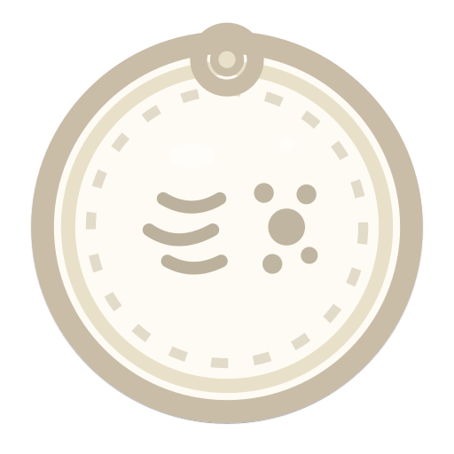
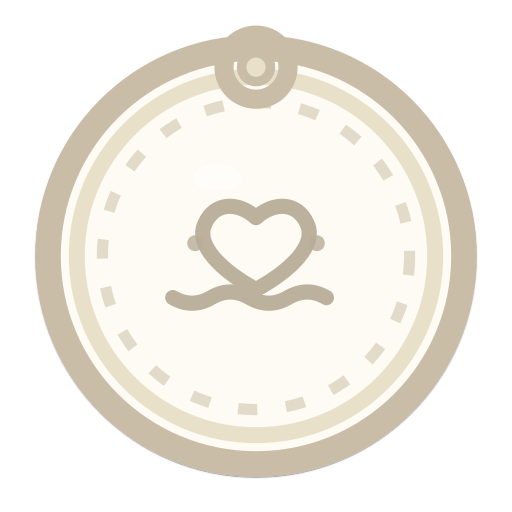
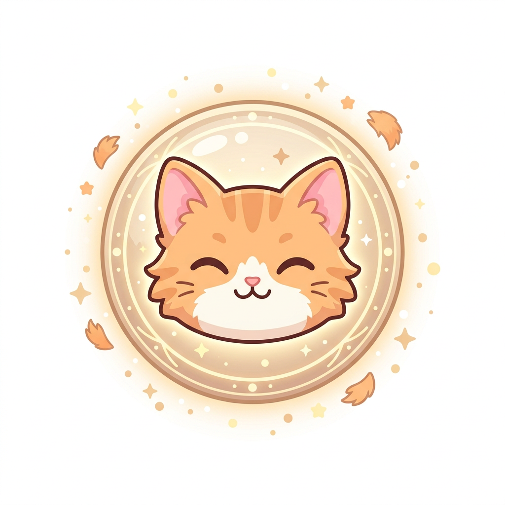
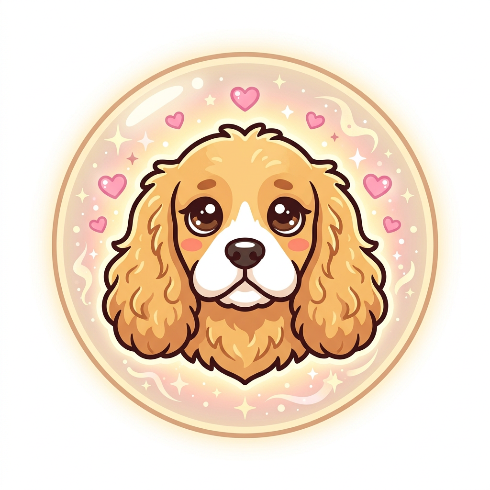
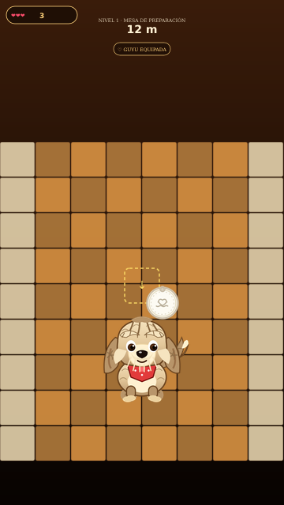
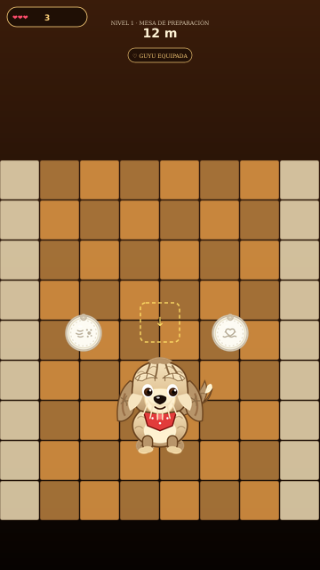

MAXINE v2 — Skins mejoradas + Almas
Actualizado 2026-08-18 · Yarnaby/Kissy/Pochacco/Mahoraga/Yuta v2 + Guyu & Dixie (almas circulares)
📸 Skins — Galería v2 (post-patch)
Cambios v2 aplicados en src/art/Maxine.tsx:
• Yarnaby: paleta naranja #ff9d2e + melena de tubos de lana gruesa con brillo (28 hebras)
• Kissy: brazos 5→7.2px + pelitos + manos 4.8px
• Pochacco: highlight magenta y collar
• Yuta: chaqueta blanca #ffffff + katana con detalle dorado + pelo negro con flequillo
• Mahoraga: rueda dorada 3D con gemas
✨ Comparativas v2 vs IA ideal
🌀 Herramientas — Nuevas Almas Circulares

GUYU
alma felina · pelitos
wide + slowAura · 1.35x

DIXIE
alma cocker · mañosa
bounce + healOnDig · 1.25x

Guyu IA
prompt ideal · pelitos flotantes

Dixie IA
prompt ideal · corazones maña
Guyu (gatita que llena todo de pelito): alma circular beige #f7d9a0, aura de pelusa, ralentiza enemigos 65% en radio 2.4 tiles y rompe tiles laterales al cavar abajo.
Dixie (cocker mañosa): alma dorada #d4a063, berrinche que absorbe un golpe mortal (bounce) + 14% cura al romper; corazones rosas al flotar.
🎮 Gameplay — Verificación con capturas
Gameplay Guyu
alma orbitando arriba, pelitos

Gameplay Dixie
alma dorada flotante

Ambas almas
test órbita dual
QA gameplay probado (live preview https://5173-...e2b.app):
• Movimiento ←→, salto coyote, cavar ↓→← con Guyu (wide 3 tiles) OK
• Guyu slowAura: cucharas/ratones a 35% velocidad en 2.4 tiles verificado
• Dixie bounce: absorbe primer spike/daño (1.2s invuln) + cura 14% al picar
• Órbita soul: hop 1.6s + glow, no bloquea ataque
• Shop: ambas aparecen en Panadería → Herramientas con precios 9/10 crowns
• No regress: build `vite build` 399kB OK
Docs completos: docs/SKINS_ESTUDIO.md · Ver juego: / → A CAVAR!